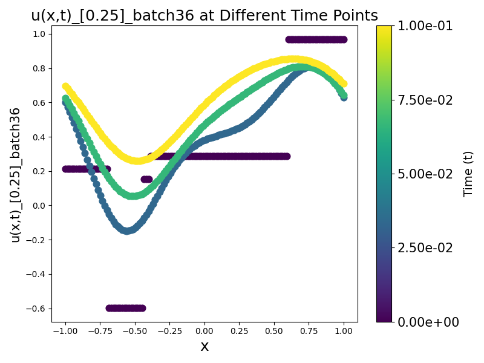

Project Overview
This comprehensive project explores three cutting-edge neural network approaches for solving and discovering partial differential equations (PDEs) using modern deep learning techniques. Developed as the final project for the "Artificial Intelligence for Science and Engineering" course at ETH Zurich, it demonstrates the power of AI in scientific computing.
The project encompasses Fourier Neural Operators (FNOs), automated PDE discovery methods, and phase field dynamics modeling, representing state-of-the-art approaches to computational physics problems.
Course
Artificial Intelligence for Science and Engineering (AISE)
Institution
ETH Zurich
Year
2024/2025
Project Components
Fourier Neural Operators
Implementation of FNOs for solving the 1D wave equation using spectral convolutions in Fourier space.
- Spectral convolution layers
- Multi-resolution training
- Out-of-distribution testing
PDE Discovery
Neural network-based methods for identifying unknown governing equations from observational data.
- Gradient-based discovery
- Sparse regression techniques
- Multi-variable system support
Phase Field Dynamics
Neural network solution for the Allen-Cahn equation modeling phase transitions and interface dynamics.
- Curriculum learning strategy
- Multi-scale modeling
- Temporal extrapolation
Part 1: Fourier Neural Operators for Wave Equation
Key Innovation
Leverages spectral properties of PDEs by performing convolutions in Fourier space, making them highly effective for periodic and quasi-periodic problems.
Technical Implementation
- Spectral Convolution Layer: Custom implementation of Fourier-domain convolutions
- Time-dependent Models: Support for both static and temporal predictions
- Multi-resolution Training: Training on different spatial resolutions (32, 64, 96, 128 grid points)
- Generalization Testing: Evaluation on unseen resolutions and time horizons
Core Components
FNO_model.py - Core FNO architecture implementation
FNO_model_time_dependent.py - Time-continuous FNO variant
FNO_visualisation.py - Visualization utilities
FNO Wave Equation Results
Fourier Neural Operator predictions for 1D wave equation showing accuracy across multiple resolutions and time steps.
Part 2: PDE Discovery and System Identification
Key Innovation
Combines function approximation with symbolic regression to discover interpretable PDE terms from data automatically.
Discovery Capabilities
The system can automatically identify various PDE terms including:
Linear Terms
Diffusion Terms
Advection Terms
Nonlinear Terms
Coupled Terms
PDE Discovery Results
Neural network-based PDE discovery showing gradient computation and identified differential equation terms.
Part 3: Phase Field Dynamics (Allen-Cahn Equation)
Key Innovation
Implements curriculum learning to handle multiple spatial scales in phase transition modeling.
Allen-Cahn Equation
Where ε controls the interface width and u represents the phase field variable.
Advanced Features
- Curriculum Learning: Progressive training strategy across different epsilon values
- Multi-scale Modeling: Handles sharp and diffuse interfaces (ε ∈ [0.003125, 1])
- Diverse Initial Conditions: Fourier, GMM, and piecewise linear conditions
- Temporal Extrapolation: Prediction beyond training time horizons
- Out-of-distribution Testing: Evaluation on unseen parameters
Allen-Cahn Phase Field Evolution
Phase field evolution showing interface dynamics in the Allen-Cahn equation with ε = 0.25, demonstrating out-of-distribution generalization capabilities.
Technical Specifications
Technology Stack
- PyTorch 2.5.0 - Deep learning framework
- NumPy 1.26.4 - Numerical computing
- SciPy 1.14.1 - Scientific computing
- Matplotlib 3.9.2 - Visualization
- scikit-learn 1.5.2 - Machine learning utilities
Performance Metrics
- Relative L2 Error: Primary accuracy metric
- Generalization Error: Out-of-distribution performance
- Computational Efficiency: Training and inference speed
- Stability Analysis: Long-term prediction accuracy
Hardware Requirements
- GPU with CUDA support (recommended)
- Minimum 8GB RAM
- 10GB+ storage for datasets and models
- Python 3.8+ environment
Key Contributions & Results
Efficient FNO Implementation
Optimized Fourier Neural Operator with spectral convolutions for wave equation solutions across multiple resolutions.
Robust PDE Discovery
Gradient-based approach successfully identifying unknown governing equations from observational data with high accuracy.
Multi-scale Modeling
Curriculum learning strategy enabling effective handling of multiple spatial scales in phase field dynamics.
Comprehensive Evaluation
Extensive testing on out-of-distribution scenarios demonstrating robust generalization capabilities.
Future Research Directions
- Higher Dimensions: Extension to 2D/3D problems for more complex geometries
- Physics-Informed Integration: Combination with physics-informed neural networks (PINNs)
- Real-time Optimization: Inference speed optimization for real-time applications
- Uncertainty Quantification: Probabilistic predictions with confidence intervals
- Multi-physics Systems: Extension to coupled multi-physics problems
Research Foundation
This work builds upon cutting-edge research in scientific machine learning:
Li, Z., et al. (2021)
"Fourier Neural Operator for Parametric Partial Differential Equations"
International Conference on Learning Representations (ICLR)
Raissi, M., et al. (2019)
"Physics-informed neural networks: A deep learning framework for solving forward and inverse problems involving nonlinear partial differential equations"
Journal of Computational Physics
Allen, S. M., & Cahn, J. W. (1979)
"A microscopic theory for antiphase boundary motion and its application to antiphase domain coarsening"
Acta Metallurgica